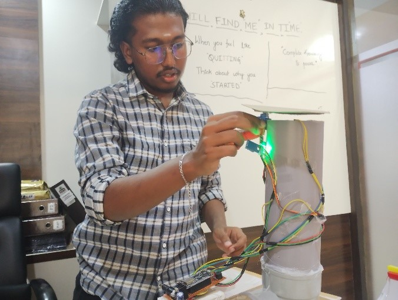

About Me
I am a Civil Engineering graduate with a strong academic foundation and a consistent
interest in understanding how structures behave beyond theoretical calculations.
My academic journey has been shaped by discipline, curiosity, and continuous effort,
which resulted in graduating as the Gold Medalist of my department.
Alongside engineering, I work as a Mathematics teacher. Teaching mathematics has
significantly improved my logical reasoning, problem decomposition skills, and clarity
in explaining complex concepts. This dual role has helped me develop a structured and
analytical mindset, which I apply directly to engineering problems.
My long term academic interest lies in structural mechanics, numerical methods, and
code based design, particularly in understanding how design assumptions, safety factors,
and serviceability limits influence real world structural performance.

Research, Seminar, Projects and Internship
RC Beam Design Using IS 456 and Eurocode 2
This independent research focused on a detailed comparison of reinforced concrete beam
design using Indian Standard IS 456 and Eurocode 2. The objective was not only to compare
design results, but to understand the underlying design philosophy of both codes.
The study examined differences in partial safety factors, stress block assumptions,
serviceability checks, and overall safety margins. Manual analytical calculations were
performed for both codes and later verified using finite element modelling in Abaqus.
Through this work, I developed a strong understanding of how Eurocode based design
emphasizes verification, serviceability, and structural behaviour, which aligns closely
with research oriented structural engineering programs.
Overflow Detection in Drainage Systems
This project addressed the problem of unexpected overflow in urban drainage systems,
which often leads to flooding and infrastructure damage. The objective was to develop
a sensor based monitoring system capable of detecting overflow conditions at an early stage.
The project involved system planning, basic electronics integration, and interpretation
of sensor data for practical decision making. It was presented as a technical poster
and received second prize, highlighting both technical clarity and presentation skills.

Seminar on Sustainable Construction Materials
This seminar focused on exploring the use of recycled aggregates, bamboo, timber, and
other renewable materials in construction. The study examined material properties,
structural limitations, durability concerns, and environmental benefits.
The seminar helped me understand the importance of sustainability in modern civil
engineering and encouraged me to critically evaluate material selection from both
structural and environmental perspectives.
Extensive Survey Project
This was a large scale field survey project involving practical exposure to real world
engineering conditions. The project covered old tank survey, new tank survey, highway
alignment, town planning layout, and water supply systems.
Responsibilities included field data collection using surveying instruments, data
processing, preparation of drawings, and interpretation of results. This project
strengthened my understanding of accuracy, coordination, and field based engineering.
Industry Internship
I completed a fifteen week internship at Medini Technologies, where I gained exposure
to professional engineering practices. The internship focused on AutoCAD drafting,
basic BIM workflows, and preparation of engineering documentation.
This experience helped me understand industry expectations, project coordination,
and the importance of precision and clarity in professional engineering work.